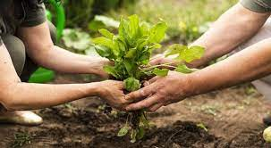

A fome e a insegurança alimentar são problemas mundiais que afetam milhões de pessoas e acarretam muitos outros problemas, como o nanismo e a caquexia. São muitos os fatores que podem levar à fome, tais como a falta de agricultura sustentável, falta de acesso à alimentos, desigualdades, desemprego, alimentos não-nutritivos, entre outros fatores. Pensando nisso, a PlanTech desenvolveu um projeto que visa a diminuição do desperdício de alimentos e o cultivo de alimentos mais saudáveis com o combate de pragas ainda em sua fase inicial de ataque nas plantações.
Para isso, foi desenvolvido um drone robô que detecta pragas nas plantações e informa suas localidades para o combate. Essa detecção é por meio de uma IA generativa que identifica as pragas nas plantações com infravermelho ainda na fase inicial e informa ao dono da plantação o nome da praga. Com essa informação, o dono da plantação entra no sistema da PlanTech e informa o nome da praga e qual plantação ela está atacando para que, dessa forma, seja indicado um tratamento saudável e sustentável para que aquela plantação não seja perdida, danificada e nem tenha alastramento das pragas. Para identificar o exato tipo de praga, a IA tem armazenado todos os dados das espécies de pragas, o que cada uma costuma atacar e o tratamento saudável e sem danos que cada uma pede.
Os benefícios dessa tecnologia é a detecção da praga em fase inicial, o que reduz o nível de perda de alimentos, o valor do produto final, já que as perdas diminuirão drasticamente -, a preservação do solo e das plantações e a garantia de uma alimentação saudável e nutritiva, pois a indicação de tratamento da plantação é saudável. Essa tecnologia pode ser levada para agricultores familiares e regiões mais afastadas que muito sofrem com esse problema, pois, dessa forma, contribuirá com o acesso à uma tecnologia capaz de diminuir suas perdas de alimentos por pragas.